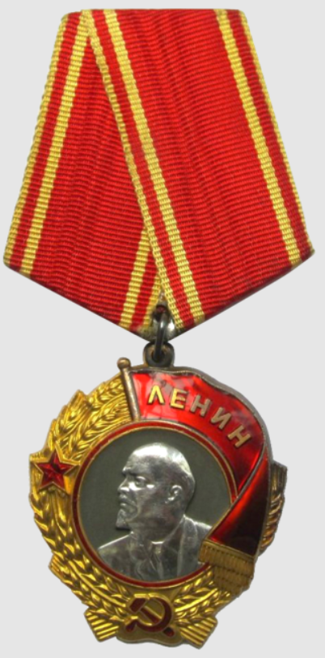
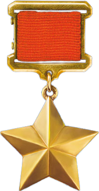

Память о Герое
Увековечение памяти
- У перрона станции Красновка установлен памятник 13-ти Героям.
- В Москве в Центральном музее Вооруженных Сил оборудован стенд «Тринадцать Героев Красновки».
- В 1999 году в посёлке Нижний Кисляй Бутурлиновского района Воронежской области на здании МОУ Нижнекисляйской СОШ, носящей имя К. И. Полякова, установлена мемориальная доска.
- В 1964 году в посёлке Нижний Кисляй и в 1978 году в городе Бутурлиновка именем Константина Полякова названы улицы.
- В Бутурлиновском краеведческом музее имеется фотостенд, посвящённый землякам-бутурлиновцам — Героям Советского Союза.
Награды и премии

Орден Ленина

Герой Советского Союза
Тринадцать Героев Красновки
Константин Илларионович Поляков был одним из тринадцати бойцов, которые совершили подвиг в районе железнодорожного поселка Донской (ныне Красновка). Все они посмертно были удостоены звания Героя Советского Союза.
Их имена навечно вписаны в историю Великой Отечественной войны как символ мужества, отваги и беззаветной преданности Родине.